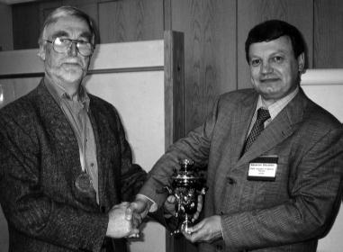
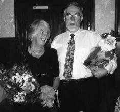
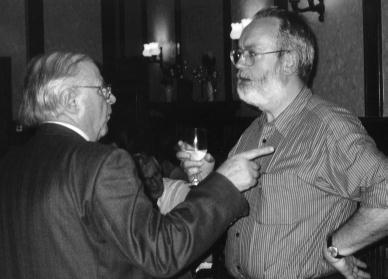

Until 1982 Alan Leadbetter was Professor of Physical Chemistry at the University of Exeter where he established an international reputation for his research in the thermodynamic properties of solids, the structures and dynamics of glasses, order disorder transitions and molecular rotations in crystals, and the structures and molecular dynamics of liquid crystals, in all of which neutron scattering played a central role. However, in that year Alan decided that in addition to pursuing his own interests in science, he could also facilitate the science of others by taking up the position of Associate Director, Head of Science Department and Head of Neutron Division at the Rutherford Laboratory. In this role Alan oversaw the completion, commissioning and internationalisation of the world's most powerful pulsed neutron source, ISIS. Following this outstanding success Alan was appointed, in 1988, as Director of Daresbury Laboratory where he helped to establish the SRS as a leading X-ray synchrotron research facility. He "retired" from Daresbury Laboratory in 1994 and in the same year was awarded the CBE. However, still far from retiring, Alan moved on to the prestigious position as the British Directeur-Adjoint and Director of Science at the Institut Laue Langevin in Grenoble from which he retired in August of this year.
Throughout his career in scientific research and at the major research facilities Alan developed a tremendous rapport with the international science community, earning the respect, friendship and gratitude of condensed matter scientists across the globe. Over sixty of these friends, colleagues and collaborators gathered at Cosener's House, Abingdon on 22 and 23 October for a remarkably enjoyable and stimulating scientific and social event organised by the joint Neutron Scattering Group of the Institute of Physics and the Faraday Division of the Royal Society of Chemistry. This event, a conference aptly entitled Science, Facilities and Facilitating Science, was arranged specifically to mark Alan's retirement and to celebrate his career. As an additional bonus, the conference also provided a lively and far reaching overview of the current international status of research fields as diverse as physical chemistry, neutron scattering, synchrotron studies, nuclear and particle physics and muon Spin Resonance..

Right: Dr Alexandre (Sasha) Belushkin of the Frank Laboratory of Neutron
Physics, Dubna, presents Alan Leadbetter with a beautiful Russian samovar
and a specially cast medal upon which is engraved an expression of the
Russian neutron scattering community's gratitude to Alan for his help,
support and encouragement.

Brenda and Alan Leadbetter at the Conference Banquet.
Faced with the problem of what retirement present he should buy for the man
who has everything, Colin Carlile, the new British Director of ILL, chose a
garden gnome!

Colin Carlile (right) is advised on the art of after dinner speaking by a former British Director of the ILL, Peter Schofield.
As expected, the conference had a distinctly international flavour, with delegates and speakers travelling from France, Germany, Holland, Japan, Italy, Russia, the USA and of course from all over Britain. The first day of the conference was dedicated purely to science with wide-ranging presentations by Rob Richardson, Bristol (The Structure and Dynamics of Liquid Crystals), Neville Greaves, Aberystwyth (Zeolites and nanoparticles), Takasuke Matsuo, Osaka (Proton tunnelling and deuteration-induced phase transitions in hydrogen-bonded crystals), John Goodby, Hull (Liquid crystals of unusual structure), Cesare Bucci, Parma (Condensed matter studies by spin polarised muons) and Don Kearley, Delft (A quantum cure for frustration). The science session ended with a short but moving ceremony in which Alexandre Belushkin, representing the Russian neutron scattering community, presented Alan with a samovar and a unique medal in recognition of Alan's help and support for Russian neutron scattering over the past twenty years.
In the evening, the sixty delegates, together with a further thirty of Alan's friends, colleagues, ex-research students and relatives, enjoyed a wonderful informal sherry reception and banquet. Colin Carlile, Alan's successor as the British Director of the ILL, provided a riotous after dinner speech on behalf of the gathered scientists, whilst Alan's brother, Michael Leadbetter, spoke movingly on behalf of Alan's friends and family.
Despite the excesses of the previous evening's celebrations the Facilities session got off to a prompt start the following morning. Bob Cernik, Daresbury Laboratory, opened the session with Brilliance, drugs and chocolate and was followed by Hywel Price, RAL (Sirius: the alchemists' dream), Dirk Dubbers, Director of ILL (On some current problems of particle physics and cosmology) and Andrew Taylor, RAL, (Expanding the frontiers....). The session and the conference was closed by Paul Williams, the Chairman of the OECD Working Group on Neutron Sources, who posed the question "Is there a future for neutrons post Leadbetter?". The answer was a resounding "YES", but that a significant part of that future is a direct consequence of Alan's tireless and successful career in science, facilities and facilitating science.
Bob Cywinski
University of St Andrews
 Click here to return to BCA homepage
Click here to return to BCA homepage